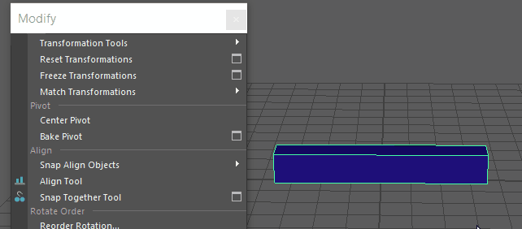

将选定对象的枢轴重置到中心
- 选择变换工具。
- 选择“修改 > 使枢轴居中”(Modify > Center Pivot)。
枢轴将移动到对象边界框的中心。
提示： 没有用于使枢轴居中的热键。但可以通过执行以下操作将“使枢轴居中”(Center Pivot)选项添加到工具架：
按住
Shift +
Ctrl 键，打开
“修改”(Modify)菜单，找到
“使枢轴居中”(Center Pivot)，然后在
“使枢轴居中”(Center Pivot)选项上松开鼠标。
CP 图标将显示在当前活动工具架的最右侧。
将选定形状的枢轴重置到中心
注： “使枢轴居中”(Center Pivot)也适用于形状，例如对象层级中的子对象。
- 选择变换工具。
- 选择对象。
- 按键盘上的向下箭头以选择对象的形状。
- 选择“修改 > 使枢轴居中”(Modify > Center Pivot)。
枢轴将移动到形状边界框的中心。
使枢轴在组件选择上居中
- （可选）选择变换工具。
- 进行组件选择。
- 选择“修改 > 使枢轴居中”(Modify > Center Pivot)。
- 枢轴将在组件选择的边界框上居中。
- 切换到对象选择模式。
枢轴将在选择的边界框上保持居中，允许您使用重新定位的枢轴变换对象。
相关主题